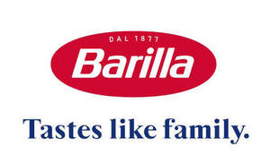

Trade Mark Journal No.2026/001 2 January 2026
UK00004311160 16 December 2025 (29,30,35,43)

International priority date claimed: 8 August 2025
(Italy)
(302025000128383)
- Class 29
- Yoghurt; tomato juice for cooking; eggs; vegetable juices for cooking; fruit-based snack food; preparations for making soup; poultry (not live); fish, preserved; fish, not live; low-fat potato crisps; potato chips; whipped cream; cream (dairy products); marmalade; margarine; vegetable salads; fruit salads; lentils, preserved; dried pulses; vegetables, cooked; vegetable preserves; milk and milk products; Juliennes [vegetable soup preparations]; edible oils and fats; gelatine; mushrooms, preserved; crystallized fruits; preserved, frozen, dried and cooked fruits and vegetables; cooked fruits; fruit preserved in alcohol; fruits, preserved; frozen fruits; fruit chips; milk shakes; cheese; canned vegetables; canned fruits; caviar; meat; stock; soups; anchovy, not live; spreadable jellies, jams, compotes, fruit and vegetable; meat extracts.
- Class 30
- Fruit jellies (confectionery); vinegar; oat-based food; starch for food; aniseed; star aniseed; flavorings; coffee flavorings; oatmeal; high-protein cereal bars; high-protein cereal bars; cocoa beverages with milk; baking soda (bicarbonate of soda for cooking purposes); biscuits; bonbons; brioches; puddings; cocoa; coffee and milk; candies; cinnamon (spice); condiments; confectionery; couscous (semolina); crackers; cakes; wheat flour; flour; edible ices; yeast; baking powder; macaroni; mayonnaise; honey; bread; rusks; breadcrumbs; unleavened bread; sandwiches; pasta; pastries; pesto (sauce); pizza; cereal preparations; ravioli; salt; rice; table salt; tomato sauce; soya sauce; sauce (condiments); dressings for salad; pasta sauce; seasonings; golden syrup; semolina; hominy grits; mustard; cereal-based snack food; rice-based snack food; sorbets (ices); spaghetti; spices; meat gravies; noodles; sponge cakes; sugar; ginger (spice); saffron (seasoning); vermicelli (noodles); farinaceous foods; cocoa and milk; ice; sago; tapioca.
- Class 35
- Advertising; business management; business administration; office functions; commercial administration of the licensing of the goods and services of others; dissemination of advertising matter; demonstration of goods; direct mail advertising; marketing; organization of exhibitions for commercial or advertising purposes; organization of trade fairs for commercial or advertising purposes; presentation of goods on communication media, for retail purposes; sales promotion for others; publication of publicity texts; on-line advertising on a computer network; television advertising; retail business services and online retail business services featuring the following goods: yoghurt, tomato juice for cooking, eggs, vegetable juices for cooking, fruit-based snack food, preparations for making soup, poultry (not live), fish, preserved, fish, not live, low-fat potato crisps, potato chips, whipped cream, cream (dairy products), marmalade, margarine, vegetable salads, fruit salads, lentils, preserved, dried pulses, vegetables, cooked, vegetable preserves, milk and milk products, Juliennes [vegetable soup preparations], edible oils and fats, gelatine, mushrooms, preserved, crystallized fruits, preserved, frozen, dried and cooked fruits and vegetables, cooked fruits, fruit preserved in alcohol, fruits, preserved, frozen fruits, fruit chips, milk shakes, cheese, canned vegetables, canned fruits, caviar, meat, stock, soups, anchovy, not live, spreadable jellies, jams, compotes, fruit and vegetable, meat extracts, fruit jellies (confectionery), vinegar, oat-based food, starch for food, aniseed, star aniseed, flavorings, coffee flavorings, oatmeal, high-protein cereal bars, high-protein cereal bars, cocoa beverages with milk, baking soda (bicarbonate of soda for cooking purposes), biscuits, bonbons, brioches, puddings, cocoa, coffee and milk, candies, cinnamon (spice), condiments, confectionery, couscous (semolina), crackers, cakes, wheat flour, flour, edible ices, yeast, baking powder, macaroni, mayonnaise, honey, bread, rusks, breadcrumbs, unleavened bread, sandwiches, pasta, pastries, pesto (sauce), pizza, cereal preparations, ravioli, salt, rice, table salt, tomato sauce, soya sauce, sauce (condiments), dressings for salad, pasta sauce, seasonings, golden syrup, semolina, hominy grits, mustard, cereal-based snack food, rice-based snack food, sorbets (ices), spaghetti, spices, meat gravies, noodles, sponge cakes, sugar, ginger (spice), saffron (seasoning), vermicelli (noodles), farinaceous foods, cocoa and milk, ice, sago, tapioca.
- Class 43
- Snack-bar services; services for providing food and drink; self-service restaurants; motels; food and drink catering; canteens; holiday camp services (lodging); cafeterias; café services; bar services; hotels; temporary accommodation reservations; hotel reservations; rental of temporary accommodation; temporary accommodation.
Barilla G. e R. Fratelli - Societá per Azioni
Representative: Perani & Partners S.p.A. c/o Shepherd and Wedderburn LLP